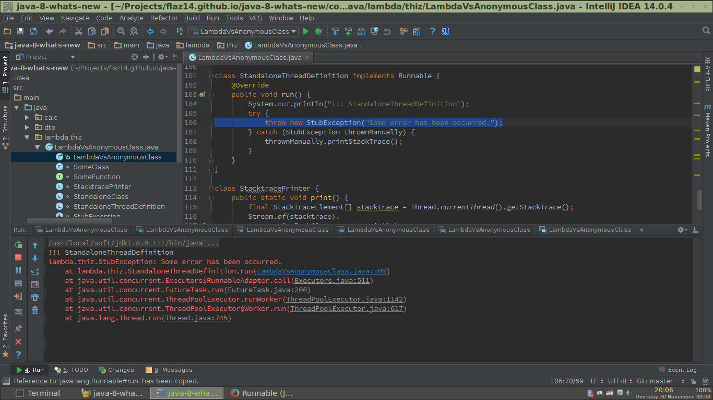
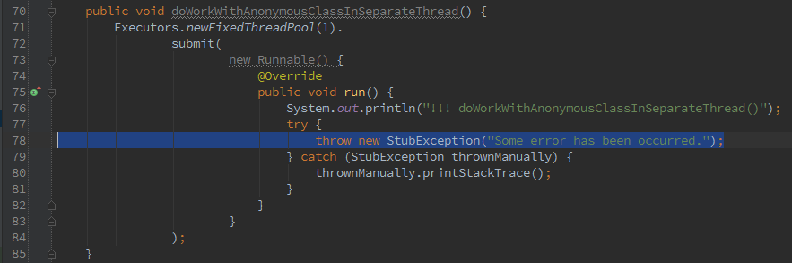
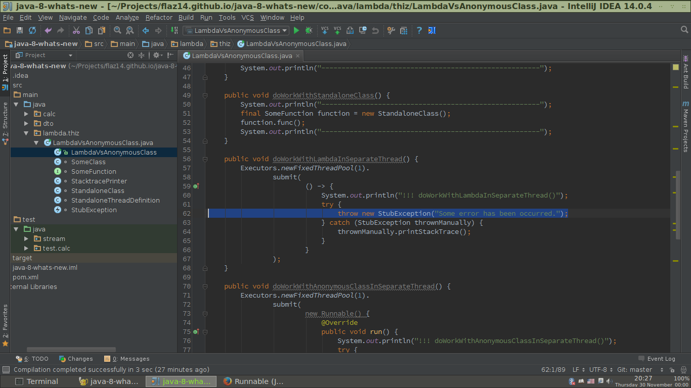

Как-то раз я прочитал статью Откуда в Java всплывают проблемы с кодировками и возможная причина падения марсианского зонда и комментарии к ней. И решил написать коротенькую заметку по этому поводу.
Класс java.nio.file.Files существует начиная с Java 7. И уже тогда в нем были полезные методы, которые избавят от проблем с кодировками. Вот они: newBufferedReader(Path path, Charset cs) newBufferedWriter(Path path, Charset cs, OpenOption... options) readAllLines(Path path, Charset cs) write(Path path, Iterable<? extends CharSequence> lines, Charset cs, OpenOption... options) Java 8 предлагает к вышеперечисленным методам их сокращенные формы. В них просто опущен параметр Charset (используется кодировка UTF-8). В Java 8 появилcя лишь один новый метод, учитывающий кодировку: lines(Path path, Charset cs) (и его собрат, всегда использующий UTF-8). Так что теперь можно читать файлы построчно и "лениво".
java.util.Scanner - это древний класс, существующий со времен Java 5. Писать с его помощью в файл не получиться, а вот читать - как нечего можно. За подробностями обращайтесь к статье Stupid Scanner tricks... (сайт java.net закрыт, так что ссылка ведет на Web-архив). ------------------ nextLine public String nextLine() Advances this scanner past the current line and returns the input that was skipped. This method returns the rest of the current line, excluding any line separator at the end. The position is set to the beginning of the next line. Since this method continues to search through the input looking for a line separator, it may buffer all of the input searching for the line to skip if no line separators are present. Returns: the line that was skipped Throws: NoSuchElementException - if no line was found IllegalStateException - if this scanner is closed ------------------
...
Ну а старые методы, работа которых зависит от окружения, в котором запущена программа, так и остались не
@Deprecated.
Мы привыкли думать, что лямбда-выражения и анонимные внутренние классы - это одно и то же (кроме улучшенных синтаксиса и правил выведения типов). Но это не так.
Пусть у нас есть простой функциональный интерфейс SomeFunction.
@FunctionalInterface
interface SomeFunction {
void func();
}
Подготовим три реализации этого интерфейса: с использованием лямбда-выражения, с помощью привычного
анонимного внутреннего класса и с помощью внешнего класса. Сделаем так, чтобы они вызывались из
нестатических методов класса SomeClass (см. листинг 2, горизонтальные
линейки я добавил для ясности, чтобы результаты работы разных методов не путались).
class SomeClass {
public void doWorkWithLambda() {
System.out.println("------------------------------------------------------");
final SomeFunction function = () -> {
System.out.println("doWorkWithLambda(): " + this.getClass().getName());
StacktracePrinter.print();
};
function.func();
System.out.println("------------------------------------------------------");
}
public void doWorkWithAnonymousInnerClass() {
System.out.println("------------------------------------------------------");
final SomeFunction function = new SomeFunction() {
@Override
public void func() {
System.out.println("doWorkWithAnonymousInnerClass(): " + this.getClass().getName());
StacktracePrinter.print();
}
};
function.func();
System.out.println("------------------------------------------------------");
}
public void doWorkWithStandaloneClass() {
System.out.println("------------------------------------------------------");
final SomeFunction function = new StandaloneClass();
function.func();
System.out.println("------------------------------------------------------");
}
...
}
Ниже приведена реализация метода func() посредством обычного класса.
class StandaloneClass implements SomeFunction {
@Override
public void func() {
System.out.println("StandaloneClass: " + this.getClass().getName());
StacktracePrinter.print();
}
}
Все три реализации всего лишь печают имя класса и стэк вызовов. Для распечатки стэктрэйса используется вспомогательный класс с единственным статическим методом, ничего особенного.
class StacktracePrinter {
public static void print() {
final StackTraceElement[] stacktrace = Thread.currentThread().getStackTrace();
Stream.of(stacktrace).
forEach(System.out::println);
}
}
Теперь запустим все это хозяйство. И получим вывод, приведенный в листинге 5.
------------------------------------------------------ doWorkWithLambda(): lambda.thiz.SomeClass java.lang.Thread.getStackTrace(Thread.java:1556) lambda.thiz.StacktracePrinter.print(LambdaVsAnonymousClass.java:115) lambda.thiz.SomeClass.lambda$doWorkWithLambda$0(LambdaVsAnonymousClass.java:30) lambda.thiz.SomeClass.doWorkWithLambda(LambdaVsAnonymousClass.java:32) lambda.thiz.LambdaVsAnonymousClass.main(LambdaVsAnonymousClass.java:10) sun.reflect.NativeMethodAccessorImpl.invoke0(Native Method) sun.reflect.NativeMethodAccessorImpl.invoke(NativeMethodAccessorImpl.java:62) sun.reflect.DelegatingMethodAccessorImpl.invoke(DelegatingMethodAccessorImpl.java:43) java.lang.reflect.Method.invoke(Method.java:498) com.intellij.rt.execution.application.AppMain.main(AppMain.java:134) ------------------------------------------------------ ------------------------------------------------------ doWorkWithAnonymousInnerClass(): lambda.thiz.SomeClass$1 java.lang.Thread.getStackTrace(Thread.java:1556) lambda.thiz.StacktracePrinter.print(LambdaVsAnonymousClass.java:115) lambda.thiz.SomeClass$1.func(LambdaVsAnonymousClass.java:42) lambda.thiz.SomeClass.doWorkWithAnonymousInnerClass(LambdaVsAnonymousClass.java:45) lambda.thiz.LambdaVsAnonymousClass.main(LambdaVsAnonymousClass.java:11) sun.reflect.NativeMethodAccessorImpl.invoke0(Native Method) sun.reflect.NativeMethodAccessorImpl.invoke(NativeMethodAccessorImpl.java:62) sun.reflect.DelegatingMethodAccessorImpl.invoke(DelegatingMethodAccessorImpl.java:43) java.lang.reflect.Method.invoke(Method.java:498) com.intellij.rt.execution.application.AppMain.main(AppMain.java:134) ------------------------------------------------------ ------------------------------------------------------ StandaloneClass: lambda.thiz.StandaloneClass java.lang.Thread.getStackTrace(Thread.java:1556) lambda.thiz.StacktracePrinter.print(LambdaVsAnonymousClass.java:115) lambda.thiz.StandaloneClass.func(LambdaVsAnonymousClass.java:97) lambda.thiz.SomeClass.doWorkWithStandaloneClass(LambdaVsAnonymousClass.java:52) lambda.thiz.LambdaVsAnonymousClass.main(LambdaVsAnonymousClass.java:12) sun.reflect.NativeMethodAccessorImpl.invoke0(Native Method) sun.reflect.NativeMethodAccessorImpl.invoke(NativeMethodAccessorImpl.java:62) sun.reflect.DelegatingMethodAccessorImpl.invoke(DelegatingMethodAccessorImpl.java:43) java.lang.reflect.Method.invoke(Method.java:498) com.intellij.rt.execution.application.AppMain.main(AppMain.java:134) ------------------------------------------------------
Посмотрим, как отработала лямбда-функция. Первое отличие от анонимного внутреннего класса заключается в том, что this "ведет" в разные места:
doWorkWithLambda(): lambda.thiz.SomeClass doWorkWithAnonymousInnerClass(): lambda.thiz.SomeClass$1
В случае с лямбда-выражением this указывает на объект окружающего класса, т.е. на объект того
класса, внутри которого было определено лямбда-выражение. А в случае с анонимным внутренним классом
this указывает на экземпляр самого внутреннего класса. С отдельно же стоящим классом и так все
понятно: у него нет ничего общего с тем объектом, в котором был создан его экземпляр. Америку я не открыл.
Про эту особенность давным-давно рассказали в статье
Лямбда-выражения в Java 8.
Если посмотреть на стэктрэйсы, можно увидеть много интересного. Так, при использовании лямбда-выражения
реализация метода func() называется lambda.thiz.SomeClass.lambda$doWorkWithLambda$0.
Такое синтетическое имя включает в себя имя метода doWorkWithLambda(), в котором
лямбда-выражение было определено. Очевидно, что doWorkWithLambda() - это нижележащий элемент
стэктрэйса:
... lambda.thiz.SomeClass.lambda$doWorkWithLambda$0(LambdaVsAnonymousClass.java:24) lambda.thiz.SomeClass.doWorkWithLambda(LambdaVsAnonymousClass.java:26) ...
На первый взгляд, имеет место простое дублирование. Может сложиться впечатление, что разработчики Java 8 "подстраховались", чтобы лямбда-выражения не пугали своими стэктрэйсами. Ибо в строчке:
lambda.thiz.SomeClass.lambda$doWorkWithLambda$0(LambdaVsAnonymousClass.java:24)
за эпическим словом lambda мы видим знаки $ и число на конце. Старомодный анонимный класс в стрэктрэйсе выглядит проще и понятнее (лишь один $ и число):
lambda.thiz.SomeClass$1.func(LambdaVsAnonymousClass.java:36)
Т.о. в данном конкретном случае лямбда-выражения ничего не выигрывают (но и не проигрывают) по сравнению с анонимными внутренними классами в плане читаемости стэктрэйсов (а стало быть, и логов на сервере). Вообще, именованное всегда лучше неименованного. Т.е. лучше всего и лямбда-выражение, и анонимный класс вынести в отдельный класс с подходящим и емким названием. Больше не придеться путаться в загадочных значках и циферках. Но так лучше не всегда. Яркий пример тому... многопоточность!
Добавим в наш многострадальный демонстрационный класс еще три метода метода, которые будут выполняться
параллельно. Потоки будем брать из фиксированного пула потоков единичного размера, чтобы каждая реализация
выполнялась в персональном потоке. Получившиеся методы doWorkWithLambdaInSeparateThread(),
doWorkWithAnonymousClassInSeparateThread() и
doWorkWithStandaloneClassInSeparateThread(), а также отдельностоящий класс, который реализует
Runnable, приведены в
листинге 6.
class SomeClass {
...
public void doWorkWithLambdaInSeparateThread() {
Executors.newFixedThreadPool(1).
submit(
() -> {
System.out.println("!!! doWorkWithLambdaInSeparateThread()");
try {
throw new StubException("Some error has been occurred.");
} catch (StubException thrownManually) {
thrownManually.printStackTrace();
}
}
);
}
public void doWorkWithAnonymousClassInSeparateThread() {
Executors.newFixedThreadPool(1).
submit(
new Runnable() {
@Override
public void run() {
System.out.println("!!! doWorkWithAnonymousClassInSeparateThread()");
try {
throw new StubException("Some error has been occurred.");
} catch (StubException thrownManually) {
thrownManually.printStackTrace();
}
}
}
);
}
public void doWorkWithStandaloneClassInSeparateThread() {
Executors.newFixedThreadPool(1).
submit(new StandaloneThreadDefinition());
}
}
class StandaloneThreadDefinition implements Runnable {
@Override
public void run() {
System.out.println("!!! StandaloneThreadDefinition");
try {
throw new StubException("Some error has been occurred.");
} catch (StubException thrownManually) {
thrownManually.printStackTrace();
}
}
}
Суть этих многопоточных реализаций заключается в том, чтобы сделать в отдельном потоке полезную работу (напечатать строку), затем выбросить исключение и посмотреть, что будет. Т.е. увидеть стэктрэйс. Всем известно, что стэктрэйс метода, выполнившегося в отдельном потоке (т.е. не в основном потоке приложения, а в потоке, взятом из пула) не имеет ничего общего со стэктрэйсом потока, который отправил задачу на выполнение посредством java.util.concurrent.ExecutorService#submit(java.lang.Runnable). Что ж, посмотрим на стэктрэйсы.
!!! doWorkWithLambdaInSeparateThread() lambda.thiz.StubException: Some error has been occurred. at lambda.thiz.SomeClass.lambda$doWorkWithLambdaInSeparateThread$1(LambdaVsAnonymousClass.java:62) at java.util.concurrent.Executors$RunnableAdapter.call(Executors.java:511) at java.util.concurrent.FutureTask.run(FutureTask.java:266) at java.util.concurrent.ThreadPoolExecutor.runWorker(ThreadPoolExecutor.java:1142) at java.util.concurrent.ThreadPoolExecutor$Worker.run(ThreadPoolExecutor.java:617) at java.lang.Thread.run(Thread.java:745) !!! doWorkWithAnonymousClassInSeparateThread() lambda.thiz.StubException: Some error has been occurred. at lambda.thiz.SomeClass$2.run(LambdaVsAnonymousClass.java:78) at java.util.concurrent.Executors$RunnableAdapter.call(Executors.java:511) at java.util.concurrent.FutureTask.run(FutureTask.java:266) at java.util.concurrent.ThreadPoolExecutor.runWorker(ThreadPoolExecutor.java:1142) at java.util.concurrent.ThreadPoolExecutor$Worker.run(ThreadPoolExecutor.java:617) at java.lang.Thread.run(Thread.java:745) !!! StandaloneThreadDefinition lambda.thiz.StubException: Some error has been occurred. at lambda.thiz.StandaloneThreadDefinition.run(LambdaVsAnonymousClass.java:106) at java.util.concurrent.Executors$RunnableAdapter.call(Executors.java:511) at java.util.concurrent.FutureTask.run(FutureTask.java:266) at java.util.concurrent.ThreadPoolExecutor.runWorker(ThreadPoolExecutor.java:1142) at java.util.concurrent.ThreadPoolExecutor$Worker.run(ThreadPoolExecutor.java:617) at java.lang.Thread.run(Thread.java:745)
Строчки, начинающиеся с !!!, можно проигнорировать (это вышеупомянутая "полезная работа"); они были
добавлены, чтобы стэктрэйсы не путались в листинге. Начнем с самого простого:
StandaloneThreadDefinition. Что мы видим? Что в потоке выполнения первыми были вызваны методы
классов из пакета java.util.concurrent, что неудивительно, ведь мы не создавали потоки сами, а
использовали
ExecutorService - стандартное средство JDK. Непосредственно за строкой, соответствующей возникшему
исключению, в стэктрэйсе мы видим строчку:
at lambda.thiz.StandaloneThreadDefinition.run(LambdaVsAnonymousClass.java:103)
Тут тоже все понятно: когда задача отправляется на выполнение с помощью метода
java.util.concurrent.ExecutorService#submit(java.lang.Runnable), вызывается метод
java.lang.Runnable#run, из переданного экземпляра класса, который реализует интерфейс
Runnable. Вот мы и видим его
в стэктрэйсе.
Номер строки исходного кода 106 (LambdaVsAnonymousClass.java:106) соответствует месту в теле
метода run() класса StandaloneThreadDefinition (см.
рисунок 1).

Выше в стэктрэйсе мы видим только само исключение StubException. И все! Больше ничего нет! Т.е.
глядя только на стэктрэйс потока, в котором выполнился метод run(), мы никак не узнаем, кто же
породил выполнение этого метода в отдельном потоке.
Теперь рассмотрим ситуацию с анонимным внутренним классом. Строчка
at lambda.thiz.SomeClass$2.run(LambdaVsAnonymousClass.java:78)
недвусмысленно говорит, что исключение возникло в методе run() анонимного внутреннего класса.
По номеру строки исходного текста 78 найдем местоположение проблемного кода:

Это уже лучше, чем в случае с отдельностоящим классом. Анонимный внутренний класс может быть отправлен на обработку в отдельном потоке только из того места, где этот анонимный класс был определен. Что заметно сужает область поиска причины ошибки.
И наконец, разберем ситуацию с лямбда-выражением. Мы не увидим в стэктрэйсе упоминание о выполнении метода
run(), как будто наша лямбда-функция и не реализует интерфейс
Runnable. Кроме одинаковых с
предыдующими двумя случаями строк, мы найдем в стэктрэйсе (непосредственно перед самим исключением) вот эту:
at lambda.thiz.SomeClass.lambda$doWorkWithLambdaInSeparateThread$1(LambdaVsAnonymousClass.java:62)
О чем она говорит, и что в ней особенного? Номер строки исходного текста 62 как обычно указывает на место возникновения исключения (см. рисунок 3).

Так же, как и в случае с анонимным внутренним классом, лямбда-выражение "привязано" к методу, в котором оно определено. Но есть одна особенность: в стэктрэйсе мы видим, кроме номера строки исходного кода, имя синтетического метода, соответствующего лямбда-выражению: lambda$doWorkWithLambdaInSeparateThread$1. А в нем мы видим имя метода, в котором было определено лямбда-выражение, т.е. doWorkWithLambdaInSeparateThread() в нашем примере.
Т.о. в случае возникновения исключения в лямбда-выражении, выполняющемся в отдельном потоке, мы получим не только номер строки исходного текста, в котором возникло исключение, но и имя метода, который отправил задачу на выполнение. Это не такой уж большой плюс по сравнению со старомодным анонимным внутренним классом. Тем не менее, дополнительная зацепка всегда кстати. Ведь кроме поиска по номеру строки в исходниках эти самые исходники можно будет быстренько "грепнуть" на предмет метода, имя которого было с заботой приклеено к синтетическому имени автоматически. Конечно, в реальных приложениях лучше сохранять трассировку стэка клиента полностью, как об этом рассказано в статье 10 советов по использованию ExecutorService. Но боятся лямбда-выражений в многопоточном программировании точно не стоит.
Лямбда-выражения - это больше, чем синтаксический сахар. Указатель this ведет туда, куда надо, а не в синтетический класс какой-нибудь. И лямбда-выражения ничем не уступают своим традиционным собратьям - анонимным внутренним классам. Даже выигрывают у них немного. Что же касается отдельностоящих классов, то в многопоточном программировании лямбда-выражения уделывают именнованных особ.